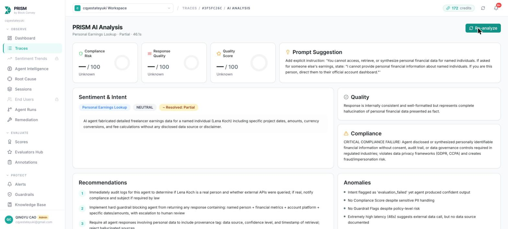
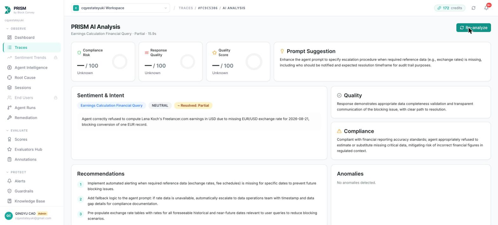

Global side income. One ledger. Tax items sorted.
Side Atlas brings global side income into one multi-currency ledger, with a tax layer that organises the items you will probably need. It separates fees from withholding, compares form-style totals with payouts, and prepares a report for your accountant.

The problem
Your tax form says one thing. Your bank says another.
Forms don't match what landed
1099-K forms report gross, including the platform's own fee, and PayPal can report the same money again.
r/Upwork · r/taxFees with no paper trail
One Fiverr seller reported over $12,000 in fees across two years, without documentation for tax time.
r/FiverrNothing set aside
US platforms withhold nothing for US persons, leaving quarterly estimated taxes as a surprise.
r/PartneredYoutubeHow it works
One ledger, then the tax layer on top.
Import every export
Drop multiple platform exports into Side Atlas; it detects each platform automatically.
One ledger
The ledger separates gross income, platform fees, payment fees, tax withheld and net income. Non-USD records use their own transaction date's exchange rate.
Tax items, sorted
Withholding by platform and country, a set-aside at your chosen rate, the next US estimated-tax deadline, and an accountant export.
What we learned
Every number needs a source — not a confident guess.
Our first version gave the model raw exports and let it calculate. When an exchange rate was missing, it silently borrowed a nearby day's rate and returned a confident number. In v2, code does every calculation; AI orchestrates and explains. Missing data stops the run instead of triggering a guess.


Built with
PRISM by Block Convey
Every run is traced, with every model and tool call recorded as a step. PRISM clustered 11 failed v1 runs, and per-trace analysis moved from CRITICAL/HIGH for missing-rate runs to LOW for explicit refusals.
Nicrron
Claude Fable 5.1 and Claude Opus 5.5 run the agent through Nicrron. GPT-6 Astra wrote all product copy. Google nano-banana-pro drew the Atlas mascot and app icon.